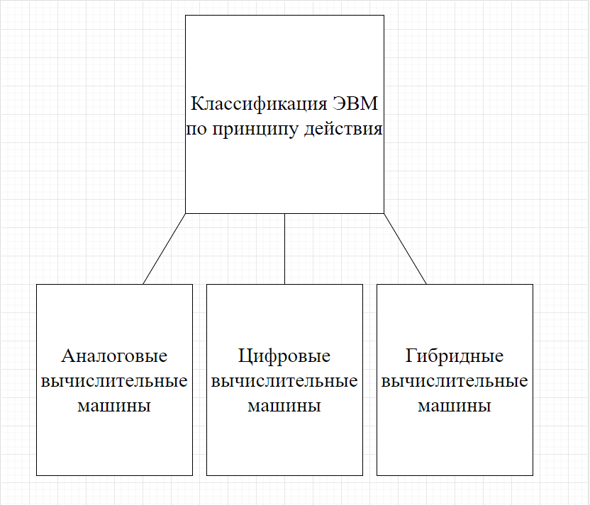
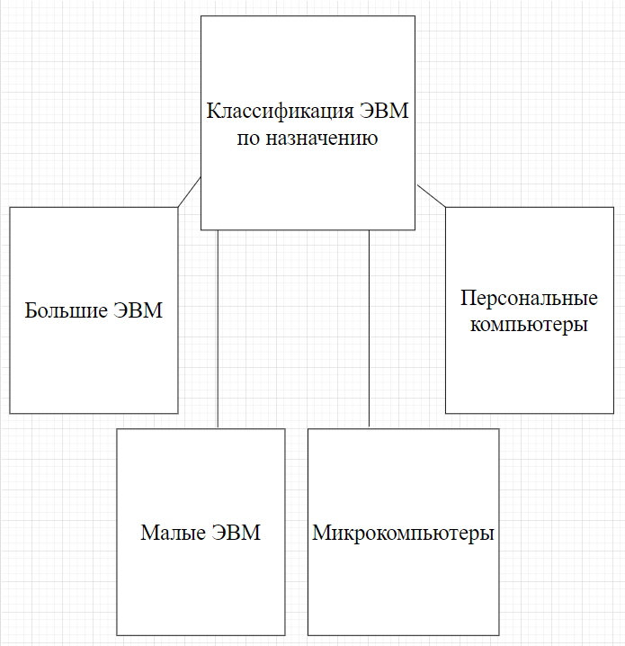
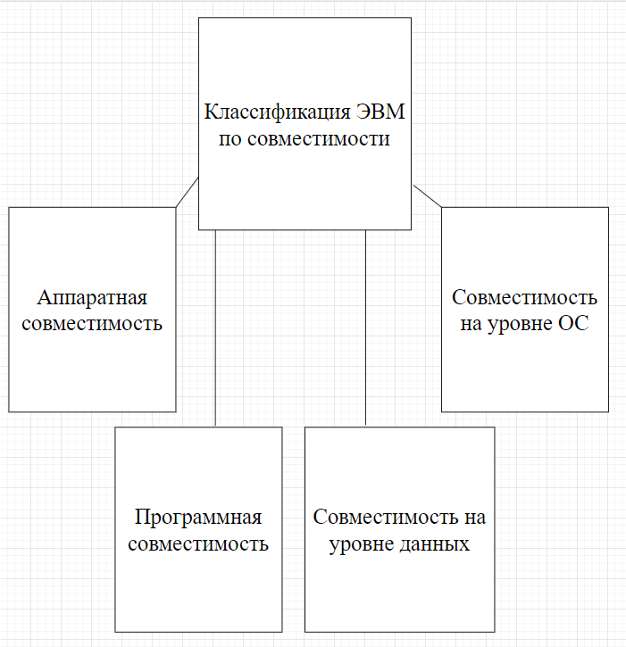
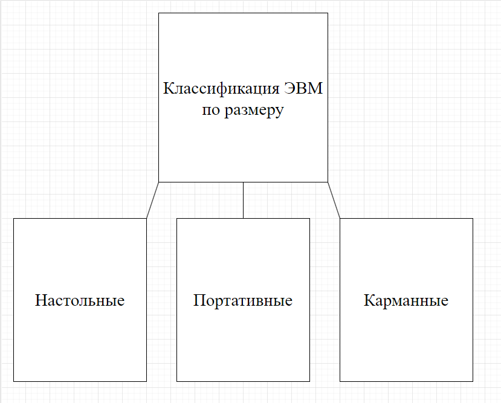

Комьютер - это комплекс технических средств, предназначенных для автоматической обработки информации в процессе решения вычислительных и информационных задач.
Видов компьютера много, они различаются по назначению, мощности, размерам, элементной базе и т.д., поэтому и классифицируют их по разным признакам, однако любая классификация является условной, поскольку развитие вычислительной техники настолько бурное, что, например, сегодняшний ПК не уступает по мощности мини-ЭВМ пятилетней давности и даже суперкомпьютерам недавнего прошлого.
Распространённые критерии классификации компьютеров:
- По принципу действия
- По уровню специализации
- По назначению
- По совместимости
- По размеру
Классификация по принципу действия
Классификация по уровню специализации

Классификация по назначению
Классификация по совместимости
Классификация по размеру
